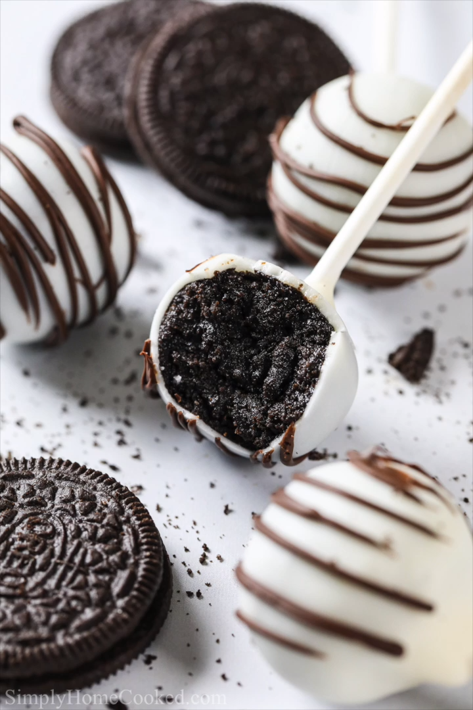

Oreo cake pops

Description
Delicious "cake pops" made with oreo cookies. Serves around 10 cake pops.
Ingredients
- 1 Oreo small package (154 g)
- 30 g Cream cheese
- White or dark chocolate for the topping
- Wooden skewers
Steps
- Grind up the whole Oreo cookies to a fine powder.
- Add and mix in the cream cheese.
- Let it rest for 10 minutes in the fridge.
- Make small balls (approximately 2-3 cm in diameter) and let them rest in the freezer for around 5 minutes.
- Dip in the tip of a skewer in melted chocolate and insert in the Oreo balls. Repeat and let them rest in the freezer for another 5 minutes.
- Dip the whole balls in the melted chocolate a let the excess drip.
- Decorate and store in the fridge using the skewers as stands.